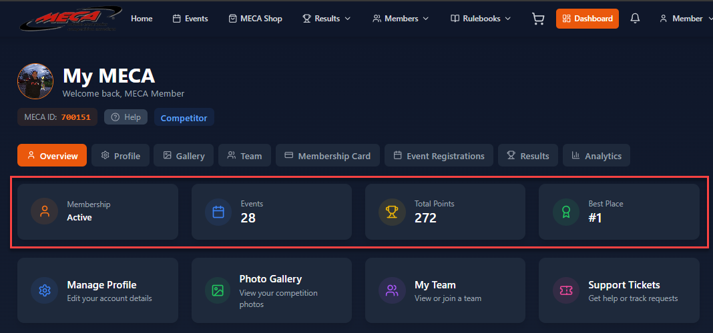
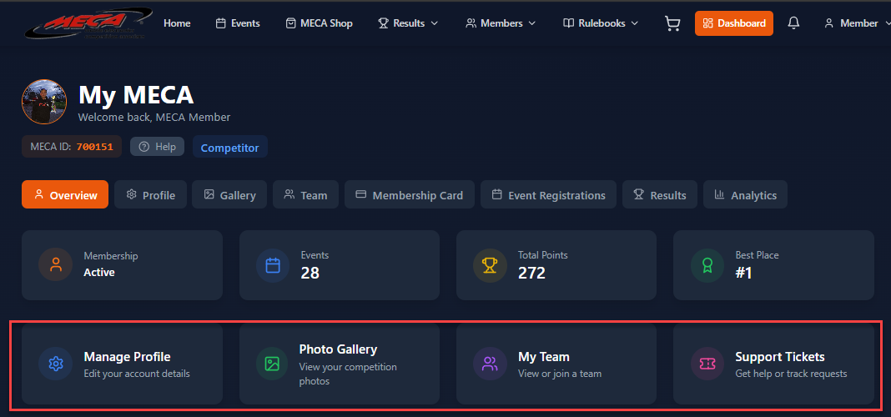
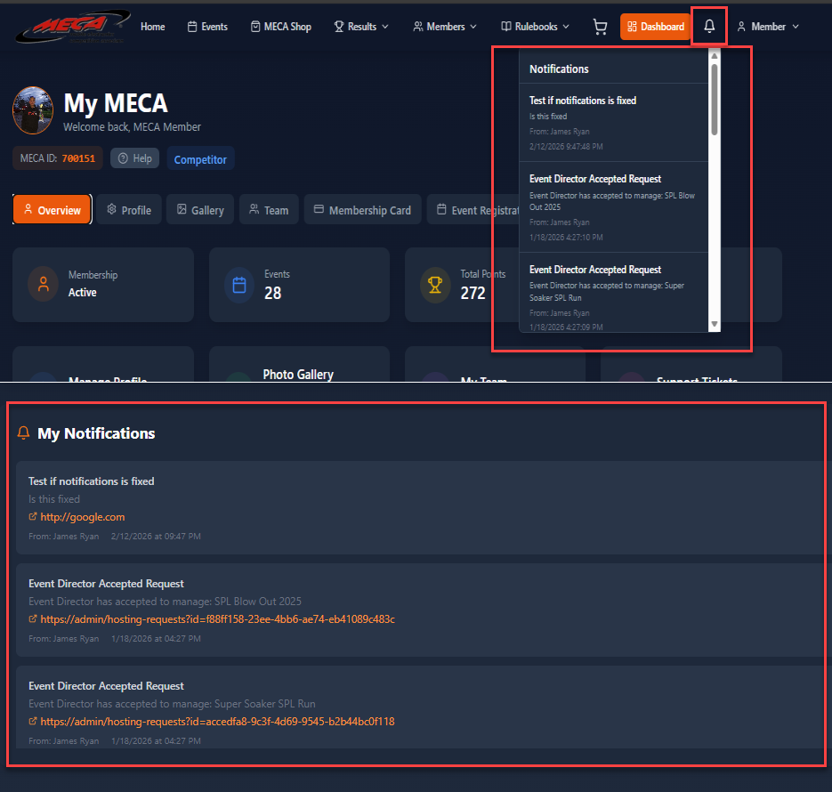
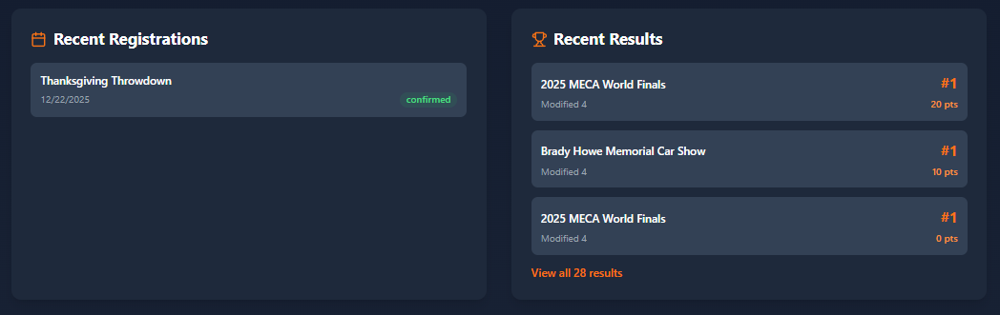

Understanding your My MECA home screen
At the top of your Overview tab, you'll see four summary cards that give you a quick snapshot of your MECA activity:

Screenshot: overview-stats-cards.png'">The four stats cards at the top of the Overview tab
| Card | What It Shows |
|---|---|
| Membership Status | Your current membership status (Active, Expired, or None). Shows your membership type name and expiry date if active. |
| Events | Total number of events you've registered for across all seasons. |
| Total Points | Your cumulative competition points earned from placements. Points are awarded for top-5 finishes. |
| Best Placement | Your highest placement across all competitions (e.g., "1st Place"). |
If you don't have an active membership, you'll see a prominent banner encouraging you to get one. This banner shows:
Once you have an active membership, this banner disappears and is replaced by your membership type badge in the dashboard header.
Below the stats, you'll find shortcut cards to the most common tasks:

Screenshot: overview-quick-actions.png'">Quick action cards for common tasks
These cards are just shortcuts — you can always access the same sections via the tab bar at the top of the dashboard.
The Notifications panel shows important updates about your account and activities:

Screenshot: overview-notifications.png'">The notifications panel with unread and read notifications
The bottom of the Overview tab shows your most recent activity:

Screenshot: overview-recent-activity.png'">Recent registrations and competition results
Your latest event registrations with status indicators (Confirmed, Pending, Cancelled). Click on any registration to see full event details.
Your most recent competition results showing event name, class, score, placement, and points earned. Placement badges (gold, silver, bronze) make it easy to spot your best finishes.
If you have special roles (Judge or Event Director), additional sections appear on your Overview tab:
During voting periods (typically leading up to the MECA Finals), a special voting section appears on your dashboard:
Voting is only available to members with active memberships during designated voting periods.